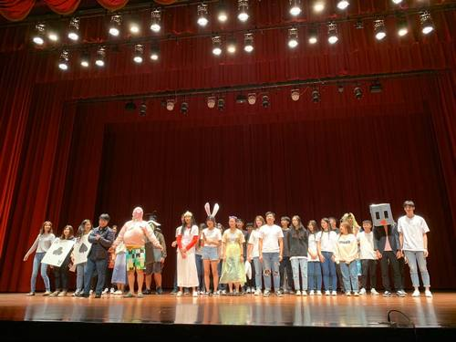
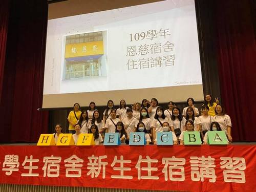

企業概論
大一上的企業概論，課程目標是讓我們從為幾個不同的公益團體行銷他們的產品中學到經驗與理念，以利我們的未來能更加順利。此外，我也學習到了許多，像是：如何更好地與他人溝通、一個好的行銷方案該具備甚麼元素等等。


HTML
CSS
Java script
C#
Python
Java
大一上的企業概論，課程目標是讓我們從為幾個不同的公益團體行銷他們的產品中學到經驗與理念，以利我們的未來能更加順利。此外，我也學習到了許多，像是：如何更好地與他人溝通、一個好的行銷方案該具備甚麼元素等等。
大一下的管理學，我們這組沿用一上時的方案為公益團體做網路方面的宣傳，使大眾能更加地認識他們。
大二上的多媒體程式設計，我們這組設計了一個關於通識活動地點的網頁。網頁裡介紹了幾個常舉辦通識活動的地方，也附有圖片。這個主題的目的是為了能讓學生們更加清楚並善加利用，因為我們在大一時也會有相同的疑問。
大二上的資料結構，老師教我們如何使用Unity來做出射擊遊戲。我從中體悟到了一個遊戲的製作是很需要耐心的，雖然可以使用複製來增加製作速度，可也是會有某些不可抗力的因素。
在大一與大二的資管之夜中，我參加的都是美宣組。我從中學習到了團隊合作與溝通技巧。最使我印象深刻的地方是大家都會特別空出時間來完成我們班的進度，使正式演出時能更加順利。
大二在學校的恩慈宿舍擔任樓長一職，平常是負責晚點名與照顧輔區學妹。會選擇當幹部的原因是因為宿舍離平常上課的地方近，加上不想通勤的關係。在任職的期間，我體悟到了幹部們的辛苦，也學到了在某些事情上要懂得變通，這樣才省時也省力。
